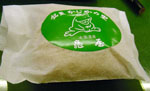
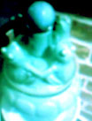

福岡かえる展でカエル図案バッグ展!作品も大募集【福岡かえる展６実行委員会】福岡かえる展でカエル図案バッグ展というコーナーを作ります。これは、事務局宛に画像を届けてもらえると、その画像をもとに事務局でバッグ展袋を製作して、展示会の会場に陳列するというものです。 これだと、遠方なためかえる展に行けないけれども、身代わりにかえるバッグを出場させることもできます。また、会場に来る人も、応募していると自分のかえる絵が、バッグになって飾られていて、とってもうれしいのです。 出展料は設けません。でも、バッグと、プリントす代が若干かかります。展示を終えたら、作者のもとに届ける送料を含めて2500円で製作します。 会場に展示しているうちに、入場者が『気に入ったら売ってくれ！』というケースもあるかもしれないので、その時は、事務局で増産して即売するつもりです。だから、応募するときは『売れても構わないよ』という気持ちで応募してください。『展示はいいけど、売るのはやだ』という方がいたら、別に考えてみます。
★詳しくはここをクリック→http://www.kerokero.com/2004/bag/bag.html
古湯温泉のお土産カエル！ 【福岡発江口パパ夫様】知り合いから佐賀県の古湯温泉のお土産をもらいました。何と蛙のマークがありましたので写真をお送りします。なぜ蛙なんでしょうね。テレビCMの蛙といい、すごく蛙がはやっている気がします。ちなみに数年前に古湯温泉に行った時、ドキドキしながら混浴に入ったのですが幼稚園未満の女性のセミヌードを拝んだだけでした。。それでは失礼します。
横浜中華街でカエルの噴水サークル！ 【横浜発走るかえる同志記者】横浜の中華街にいったときのことです。たまたまはいった中華料理やの入り口に、かえるの噴水サークルがありました。かえるが周囲を取り囲み、玉から出て来る水を捧げているすばらしいものです。 私の故郷の福岡市も、市役所前広場全部を噴水にして、カエルがとびあがっている巨大な像で取り囲み、口から噴水を放水してほしいとおもいます。 【全国かえる奉賛会】次期市長選で福岡市長になったら、福岡市庁舎を取り壊して、一体を沼地として、周囲を体長１５０メートルのカエル像で取り囲みたいと思います。
市庁舎にすめるのは、水中に適応した人間だけえです。
|
メールマガジン登録
メールマガジン解除
Powered by


かえる古新聞過去に取り上げた記事を見出し付きで一覧したい人は、ここをクリック◆創刊号を見る◆先週号を見る◆話題の号を見る◆かえる新聞の昔を読む
|
私も入っています。。全国かえる奉賛会
大王様に会うには、このバナーをクリック。ずっと奥に写真館があるぞ。全国かえる奉賛会に入会するには、自分のホームページのどこかに、下の部分を追加するとバナーがリンク付きで表示されるぞ。どんどん入会しましょー |


|